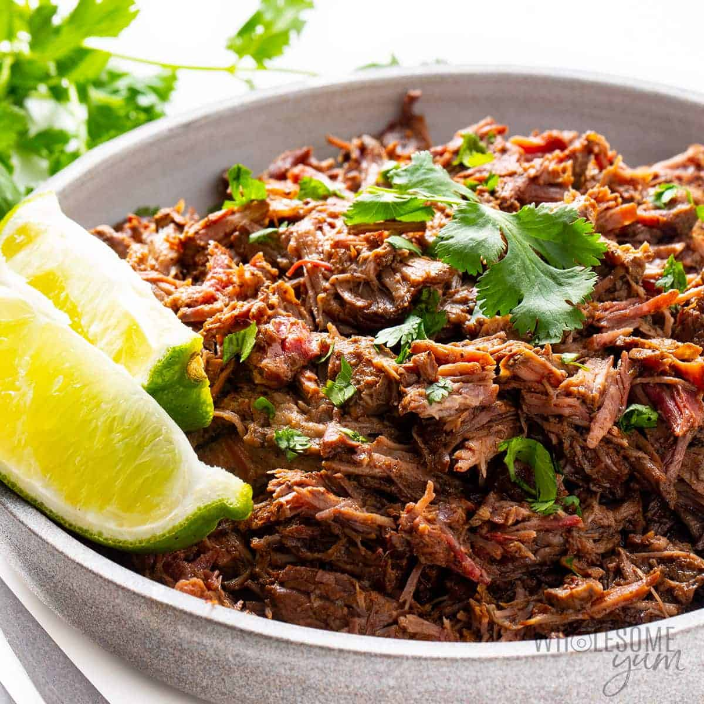

Barbacoa

Description
Juicy, tender barbacoa beef comes to life with flavorful Mexican spices. A full day of roasting's flavor with just a few minutes of prep work with your slow cooker.
- 3 lbs. beef chuck roast, trimmed
- 2 chipotle peppers with sauce
- 4 cloves garlic
- 1 small white onion
- 1/4 c. lime juice
- 2 Tbsp. apple cider vinegar
- 1 Tbsp. cumin
- 1 Tbsp. oregano
- 2 tsp. salt
- 1 tsp. black pepper
- 1/4 tsp. cloves
- 1/3-1/2 c. water or broth
- cilantro for garnish
- Slow cook. Combine all ingredients in the bowl of a slow cooker. Toss gently to combine.
Cover and cook on low for 6-8 hours, or on high for 3-4 hours, or until the beef is tender and falls
apart easily when shredded with a fork.
- Shred and toss. Using two forks, shred the beef into bite-sized pieces inside of the slow
cooker. Toss the beef with the juices, then cover and let the barbacoa beef soak up the juices for an extra
10 minutes.
- Serve. Use a pair of tongs or a slotted spoon to serve in tacos, salads, or your favorite
bowl. Garnish with cilantro and fresh lime and enjoy!